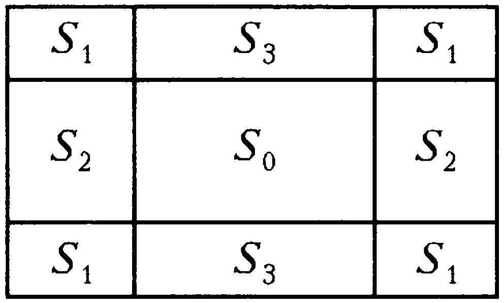
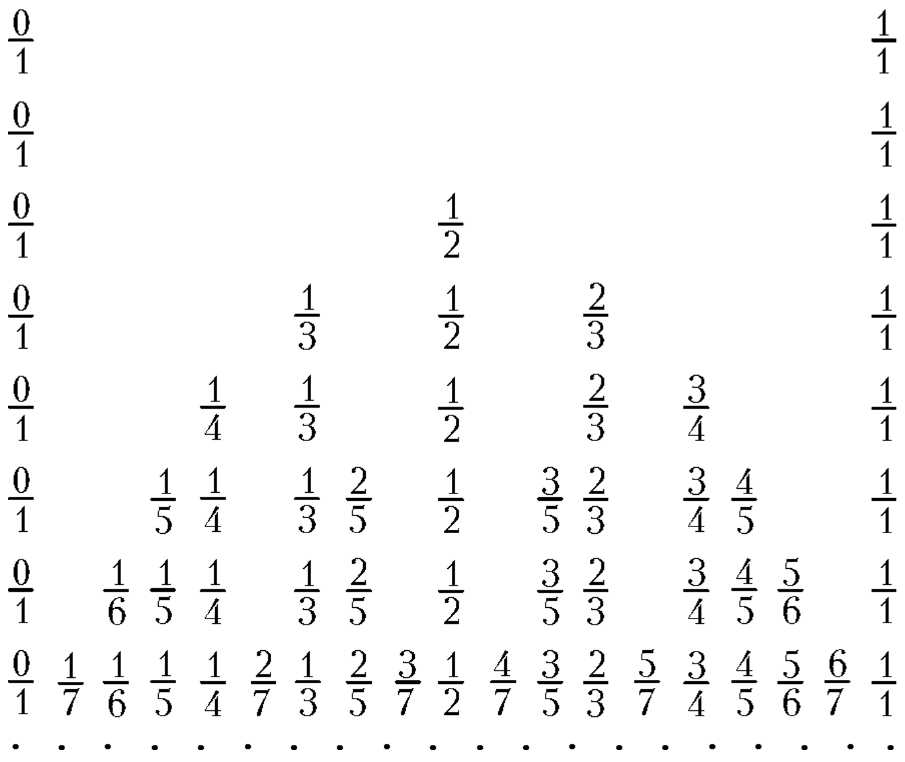
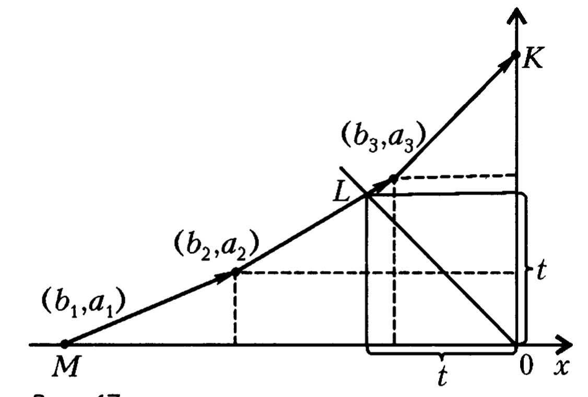
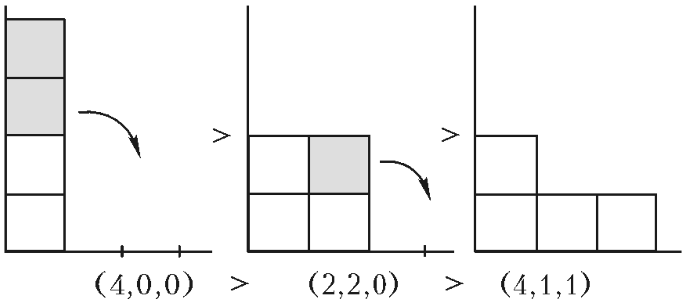
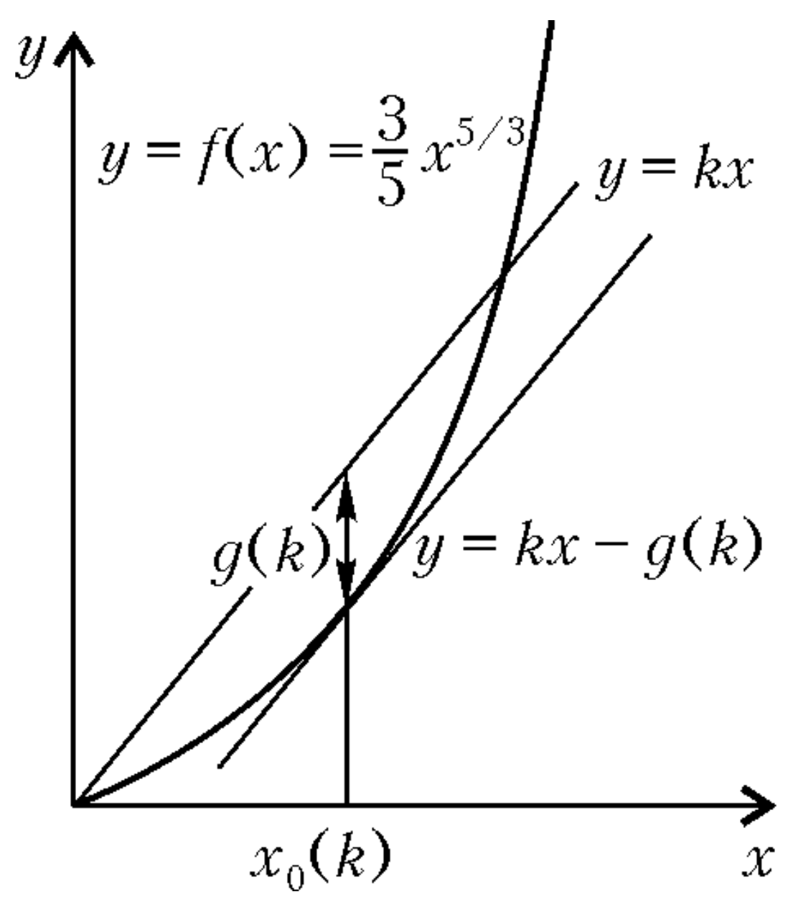
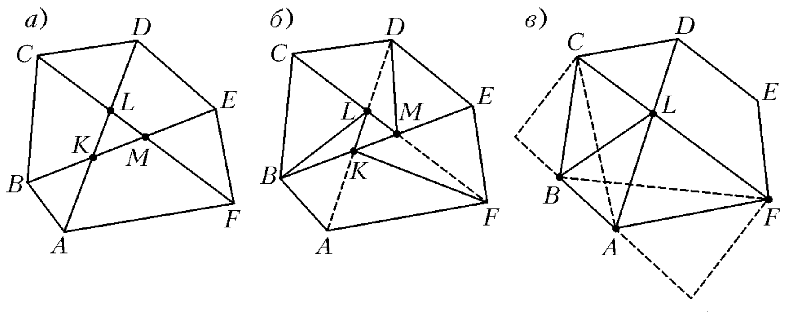
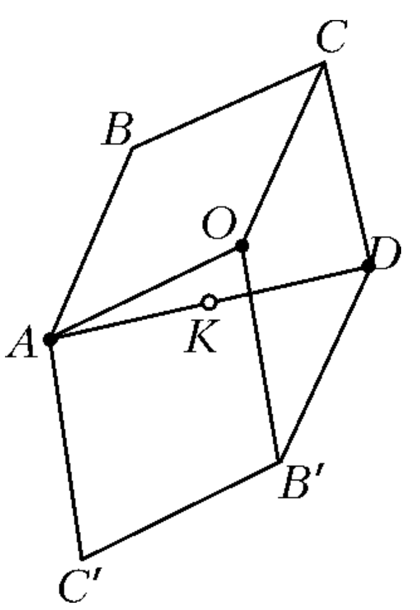
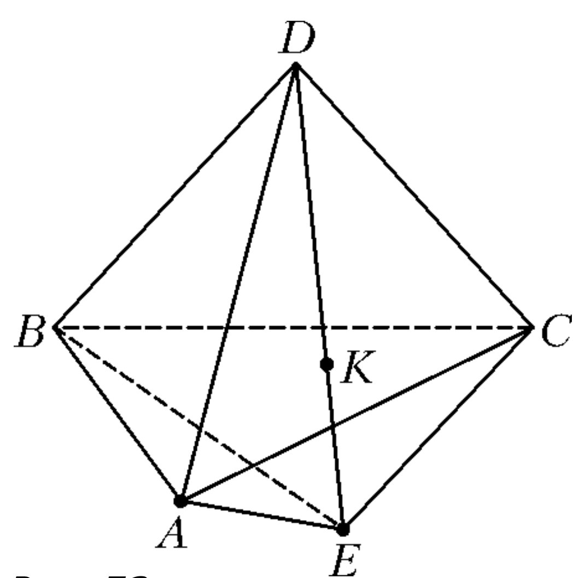

4 INEQUALITIES, EXTREMAL PROBLEMS, ESTIMATES
Problems
4-1. In a right triangle, \(a\) and \(b\) are the legs, \(c\) is the hypotenuse, and \(h\) is the altitude dropped onto the hypotenuse. Prove that \(c + h\) is greater than \(a + b\).
4-2. The equation \(ax + bx + c = 0\) has no real roots, and \(a + b + c < 0\). What sign does the number \(c\) have?
4-3. Given rectangle \(ABCD\). A random point is taken inside it, and through this point, two lines are drawn parallel to its sides. They divide the rectangle into four smaller rectangles. Prove that at least one of the rectangles containing points \(A\) and \(C\) has an area not exceeding \(\frac{1}{4}\) of the total rectangle’s area.
4-4. A bank deposit of 1000 rubles. In which case will the depositor receive more money after 10 years: if the bank adds 5% of the existing sum once a year, or if it adds \(\frac{5}{12}\%\) once a month?
4-5. A bus is considered overcrowded if there are more than fifty passengers. Two inspectors checked a line of buses. Inspector Podberezovikov calculated the percentage of overcrowded buses, while Inspector Podosinovikov calculated the percentage of passengers traveling in overcrowded buses. Whose percentage is higher?
4-6. What is the minimum number of participants in a math club if it’s known that girls make up: a) less than 50%, but more than 40%;
b) less than 44%, but more than 43%?
4-7. The front tires of a truck wear out after 15,000 km of travel, while the rear tires wear out after 25,000 km. (There are two tires per rear axle and one per front axle.) How should the tires be rotated on the wheels to travel the maximum distance on the same set of tires? Find this distance.
4-8. A kid can eat a cake in 10 minutes, cook a bun in 13 minutes, and drink a jug of milk in 14 minutes, while Karlson can do these in 6, 6, and 7 minutes respectively. What is the minimum time they need to finish a snack consisting of a cake, a bun, and a jug of milk?
4-9. Vitya usually meets Olya at the last metro station. Metro trains leave at strictly regular intervals. The first time, Vitya waited for Olya for 12 minutes, during which 5 trains left. The second time, he waited for 20 minutes, during which 6 trains left. The third time, he waited for 30 minutes. How many trains could have left during this time?
4-10. Several boxes weigh together 10 tons, with each box weighing no more than one ton. What is the minimum number of three-ton trucks needed to transport all this cargo in one trip?
4-11. Find three numbers, each of which equals the square of the difference of the other two numbers.
4-12. Prove that for any natural numbers \(m\) and \(n\) greater than 1, the product \(nm\) and \(mn\) does not exceed 33.
4-13. For what \(n\) does the product \(\lg 2 \cdot \lg 3 \cdot ... \cdot \lg n\) reach its minimum value?
4-14. It’s known that numbers \(x_1, x_2, x_3, x_4, x_5\) are non-negative and \(x_1 + x_2 + x_3 + x_4 + x_5 = 1\). Find the maximum value of \(x_1 x_2 + x_2 x_3 + x_3 x_4 + x_4 x_5\).
4-15. Prove that for any \(a, b, c\), the inequality holds: \(a^4 + b^4 + c^4 \geq a^2bc + b^2ac + c^2ab\).
4-16. Prove that for any positive \(a\) and \(b\), the inequality \(2^a + 3^b \geq 5\sqrt{ab}\) holds.
4-17. Prove that in any convex hexagon there exists a diagonal that cuts off a triangle whose area does not exceed \(\frac{1}{6}\) of the hexagon’s area.
4-18. Prove that for any angles \(\alpha\), \(\beta\), \(\gamma\) between 0 and \(\pi\), the inequality holds: [ + + () ]
4-19. What is the maximum area of a quadrilateral where the lengths of three sides are each 1?
4-20. A convex polyhedron with five vertices is inscribed in a sphere of radius 1. Find the maximum volume of such a polyhedron.
4-21. On a grid paper with cell side length 1, a circle of radius 10 is drawn. Prove that inside this circle there are more than 250 grid points.
4-22. Is it possible from point \(O\) to direct 15 rays into space such that the angle between any two of them is greater than 60°?
4-23. On the first of two equal circles, three arcs of 25° each are marked, on the second - two arcs of 30° each. Prove that the second circle can be so placed on the first that the marked arcs do not intersect.
4-24. Prove that five weights can be arranged in order of their masses, having performed no more than 7 weighings on a balance scale (allowing for the comparison of two weights in one weighing).
Here’s the discussion translated into English:
4.1 Problems Discussion
Problem 4-1. By two methods of calculating the area of a triangle, we get \(ch = ab\), hence \(h = \frac{ab}{c}\). The inequality \(c + h > a + b\) can be written as: [ + c > a + b. ] Multiplying both sides by \(c\) (where \(c > 0\)), we obtain the equivalent inequality: [ c^2 - c(a+b) + ab > 0, ] or [ (c - a)(c - b) > 0. ] This inequality is true because the hypotenuse is greater than each leg.
\(\nabla\) In solving this problem, we established that if the products \(ch\) and \(ab\) of two pairs of positive numbers are equal, then the sum is greater for the pair whose numbers are more “spread out”: if \(a\) and \(b\) are between \(c\) and \(h\), then \(c + h > a + b\). This fact also follows from the fact that the function \(f(x) = x + \frac{A}{x}\) is monotonically increasing for \(x \geq A\).
Problem 4-2. Answer: \(c < 0\).
Consider the function \(f(x) = ax^2 + bx + c\). By condition, it does not cross zero, so its graph - a parabola - is either entirely above or entirely below the x-axis.
Notice that \(f(1) = a + b + c\); this number, by condition, is less than zero, which means the parabola is below the x-axis. Therefore \(f(x) < 0\) for all values of \(x\) and, in particular, \(f(0) = c < 0\).
∇ In the solution, we essentially used the continuity of the function \(f\): if a function is continuous on an interval and does not become zero on it, then all its values on this interval have the same sign.
Problem 4-3. Let’s draw the axes of symmetry of the rectangle. They divide the given rectangle into 4 quarters. If the selected point lies in any of the two quarters containing points A and C, or on the boundary of these quarters, then the statement of the problem is obvious. Let the selected point lie inside one of the two remaining quarters. Reflect both cut lines with respect to the center of symmetry of the rectangle. Four lines (two cut lines and two symmetrical to them) divide the rectangle into 9 parts: four parts with area \(S_1\), two parts with area \(S_2\), two parts with area \(S_3\), and one part with area \(S_0\) (Fig. 46). We must prove that \(S_1 + S_2\) or \(S_1 + S_3\) does not exceed \(\frac{S}{4}\), where \(S\) is the area of the entire rectangle.

Since \[4S_1 + 2S_2 + 2S_3 = S - S_0 < S,\] then \[2S_1 + S_2 + S_3 < \frac{S}{2}, \text{ or } (S_1 + S_2) + (S_1 + S_3) < \frac{S}{2}.\] This means that one of the numbers \(S_1 + S_2\), \(S_1 + S_3\) is less than \(\frac{S}{4}\) (if both were not less than \(\frac{S}{4}\), then their sum would be not less than \(\frac{S}{2}\)).
∇ The following stereometric problem, similar to problem 4-3, is of interest: let \(V_1 \leq V_2 \leq \dots \leq V_8\) be the volumes of the eight parts into which a parallelepiped of volume 1 is divided by three planes passing through its point and parallel to its faces; within what limits can each of the values \(V_i\), \(i = 1, 2, \dots, 8\) vary? For example, it turns out that \(0 \leq V_4 \leq \frac{1}{8}\) and for any \(V_4\) from this interval, there is a corresponding partition of the parallelepiped. (When proving the inequality \(V_4 \leq \frac{1}{8}\), it is convenient to use the fact that two opposite parts have volumes whose products are not greater than \(\frac{1}{64}\).) A similar question can be considered for an \(n\)-dimensional parallelepiped of unit volume.
Problem 4-4. Answer: if the bank accrues interest once a month. Let the interest be accrued once a year. Then at the end of the first year, the deposit will be equal to \[\left(1000 + 1000 \cdot \frac{5}{100} \right) = 1000 \left(1 + \frac{5}{100} \right) \text{ rubles}.\] At the end of the second year, the deposit will increase by 5% from this amount and will become equal to \[1000 \left(1 + \frac{5}{100} \right) \left(1 + \frac{5}{100} \right) = 1000 \left(1 + \frac{5}{100} \right)^2 \text{ rubles}.\] Reasoning similarly, we see that after 10 years the depositor will receive \[1000 \left(1 + \frac{5}{100} \right)^{10} \text{ rubles}.\] If interest is accrued once a month, then in the same way we find that the depositor will receive after 10 years (i.e., after 120 months) \[1000 \left(1 + \frac{5}{1200} \right)^{120} \text{ rubles}.\] We will show that the second number is greater than the first. To do this, it is enough to show that \[\left(1 + \frac{5}{100} \right) < \left(1 + \frac{5}{1200} \right)^{12}.\] Let’s start calculating the right side of this inequality – the product of twelve identical expressions \[\left(1 + \frac{5}{1200} \right) \left(1 + \frac{5}{1200} \right) \dots \left(1 + \frac{5}{1200} \right).\] In the process of multiplication, we will have to take 1 in each bracket and multiply them all – we get 1 as a result. If we take \(\frac{5}{1200}\) in one bracket and 1 in the others, then we get \(\frac{5}{1200}\); but there are as many such products as there are brackets, i.e. 12, and they give the number \(12 \cdot \frac{5}{1200} = \frac{5}{100}\). Although we have not taken into account all the terms, we already got \(1 + \frac{5}{100}\), so the entire product will be greater than this number.
∇ Let K rubles be deposited in the bank and the bank pays p% per annum. Reasoning in the same way as in the solution to problem 4-4, we will see that after m years the depositor will receive \(K \left(1 + \frac{p}{100} \right)^m\) rubles (the so-called compound interest formula). This value can be roughly estimated from below using Bernoulli’s inequality, which we have essentially already proved: \[\left(1 + x \right)^n > 1 + nx \text{ for } x > 0, n > 1.\] (In the solution to problem 4-4, it was \(x = \frac{5}{1200}\), \(n = 12\).) It follows from this inequality that if we reduce the payment periods and proportionally reduce the interest rate, then the depositor will receive a larger amount. This is due to the fact that for \(a > 0\) the sequence \[x = \left(1 + \frac{a}{n} \right)^n\] is increasing. However, it turns out that the depositor will not be able to get too much benefit from reducing the terms, since this sequence is bounded. Its limit is the number \(e^a\). If you calculate the sums from problem 4-4 on a calculator, then in the first case we get about 1629 rubles, in the second – about 1647 rubles, and \(1000e^{0.05} \approx 1649\).
Let there be \(k\) overcrowded and \(l\) non-overcrowded buses in the column. Denote the number of passengers traveling in overcrowded buses by \(A\), and the number of the rest by \(B\). Then \(A > 50k\), \(B \leq 50l\), and therefore \(\frac{A}{k} > 50\), \(\frac{B}{l} \leq 50\). Thus, \(\frac{A}{k} > \frac{B}{l}\). From the last inequality, the following follows: \[\frac{B}{A} < \frac{l}{k},\] \[\frac{A + B}{A} < \frac{l + k}{k},\] \[\frac{A}{A + B} > \frac{k}{l + k},\] from where \[\frac{A}{A + B} \cdot 100\% > \frac{k}{l + k} \cdot 100\%.\] In the last inequality, on the left is the percentage of people traveling in overcrowded buses, and on the right is the percentage of overcrowded buses.
Problem 4-6. Answer: a) 7; b) 16. Let there be \(n\) participants in the circle, of which \(m\) are girls. We need to find the smallest natural number \(n\) for which there exists such a natural number \(m\) that \[\frac{2}{5} < \frac{m}{n} < \frac{1}{2}.\] Iterating through the values of \(n\) from 2 to 7, we find that only the fraction \(\frac{3}{7}\) with denominator 7 satisfies this inequality. Thus, 7 is the smallest possible value of \(n\).
∇ Note that the fraction \(\frac{3}{7}\) is obtained from the fractions \(\frac{2}{5}\) and \(\frac{1}{2}\) as follows: its numerator is the sum of their numerators, and the denominator is the sum of their denominators.
For any positive fractions \(\frac{a}{b}\) and \(\frac{c}{d}\) (\(\frac{a}{b} < \frac{c}{d}\)), the fraction \(\frac{a+c}{b+d}\) satisfies the inequalities \(\frac{a}{b} < \frac{a+c}{b+d} < \frac{c}{d}\) and is called the mediant of these fractions.
Writing out irreducible fractions with a denominator not exceeding \(n\) in ascending order, we get the following table:  Each \(n\)-th row (Farey sequence) is obtained from the \((n-1)\)-th row according to the following rule: in the \((n-1)\)-th row, one needs to mark all such pairs of neighboring fractions \(\frac{a}{b}\), \(\frac{c}{d}\), for which the sum of the denominators is equal to \(n\), and insert their mediants – fractions \(\frac{a+c}{b+d}\) (they are always irreducible) between them.
In problem a), we found the row number \(n=7\), in which the fraction located between the fractions \(\frac{2}{5}\) and \(\frac{1}{2}\) first appears.
In problem b), acting by brute force is quite tedious. Let’s proceed as follows. We must find a solution to the inequalities \[ \frac{43}{100} < \frac{m}{n} < \frac{44}{100} = \frac{11}{25} \] with the smallest natural \(n\).
Let’s invert all the fractions and subtract their common integer part: \[ \frac{n}{43} - 2 > \frac{m}{11} > \frac{25}{11} - 2 \] \[ \frac{n-86}{43} > \frac{m}{11} > \frac{3}{11} \] \[ \frac{11(n-86)}{43} > m > 3 \] Let’s do the same thing again: \[ \frac{1}{m-3(n-2m)} = \frac{1}{7m-3n} \le \frac{2}{3} \] and one more time: \[ \frac{14}{n-2m} > \frac{3}{7m-3n} > 2 \] Notice that here, for the first time, integers appear between the bounds of the inequality. The smallest of them is the number 2. The system of equations \(n-2m=2\), \(7m-3n=1\) has a solution in natural numbers \(n=16\), \(m=7\).
Let’s prove that this is the solution to the problem. From inequalities (2)–(4) it follows that \[ n-2m > 0, \quad 7m-3n \ge 1, \quad n-2m \ge 2 \] Therefore \[ n = 7(n-2m) + 2(7m-3n) \ge 7 \cdot 2 + 2 \cdot 1 = 16 \] ∇ Analyzing this solution, we notice that, in essence, we are expanding the numbers \(\frac{43}{100}\) and \(\frac{11}{25}\) into continued fractions: \[ \frac{43}{100} = \frac{1}{2+\frac{14}{43}} = \frac{1}{2+\frac{1}{3+\frac{1}{14}}} \] \[ \frac{11}{25} = \frac{1}{2+\frac{3}{11}} = \frac{1}{2+\frac{1}{3+\frac{2}{3}}} \] Then we take the common part of these expansions at the step where the expansions differ, between \(\frac{1}{14}\) and \(\frac{2}{3}\) we insert the smallest integer, i.e. 1, and as a result we get the answer: \[ \frac{1}{2+\frac{1}{3+1}} = \frac{1}{2+\frac{1}{4}} = \frac{4}{9} = \frac{16}{36} \] This algorithm allows you to quickly find a fraction \(\frac{m}{n}\) with the smallest denominator \(n\) in any given interval \(0 < \alpha < \frac{m}{n} < \beta\) (see [61, 119]).
Problem 4-7. Answer: The maximum distance is 620454/11 km. Tires need to be changed so that each of them is front for one third of the way.
Let’s take as a unit the amount of rubber that can be worn out on one tire before it becomes unusable. Then, before the trip, there are 6 units of rubber in total. From the condition, it follows that for 1 km of the path, 1/15000 units are erased if the tire is in front, and 1/25000 if it is in the back. This means that for 1 km of the path, 2/15000 + 4/25000 = 11/37500 units of rubber are erased. Let the car have travelled x km. Then 11x/37500 units of rubber have been erased. Since no more than 6 units can be erased, we have \[ \frac{11x}{37500} \le 6 \] from where \[ x \le \frac{20454}{11} \times 6 \] To drive all 20454/11 km, it is necessary to change the tires so that each of them is in front for a third of this distance: then they will all wear out simultaneously - by the end of the journey.
Problem 4-8. Answer: 12 minutes.
It is quite clear that if the Kid and Carlson want to eat breakfast in the shortest possible time, then they must start and finish eating at the same time - otherwise, one of them can help the other and reduce the time spent.
Let us denote by x, y, z the shares of cake, jam and milk that the Kid ate; then (1-x), (1-y), (1-z) are the shares of these products that Carlson ate, and the time they spent is equal to \[ t = 10x + 13y + 14z = 6(1-x) + 6(1-y) + 7(1-z) \] Thus, we come to the following problem: find the minimum value of the quantity t = 10x + 13y + 14z, if the numbers x, y, z satisfy the conditions 0≤x≤1, 0≤y≤1, 0≤z≤1 and \[ 10x + 13y + 14z = 6(1-x) + 6(1-y) + 7(1-z) \] From the last relation, one can express z in terms of x and y: \[ z = \frac{1}{21}(19 - 16x - 19y) \] Substituting this expression into the formula for t, we get \[ t = -\frac{2}{3}x + \frac{1}{3}y + \frac{38}{3} \] From this formula, we see that \(t\) will be smaller the larger \(x\) is and the smaller \(y\) is. Let’s take the largest possible value of \(x\) and the smallest possible value of \(y\): \(x=1, y=0\). In this case, \(t=12\) minutes, and \(z\) is within the permissible limits. Consequently, the minimum value of \(t\) is achieved in the case when the Kid eats the cake and drinks the milk, and Carlson eats all the jam and drinks the milk.
\(\nabla\) We have reduced problem 4-8 to a linear programming problem: find the minimum of a linear function under the condition that the variables are non-negative and satisfy a system of linear inequalities and equations.
If it were required to solve a similar problem for \(n > 3\) products, then such a solution method would lead to rather cumbersome calculations; however, it is possible to specify a simple general rule that indicates the optimal plan for the distribution of products.
Let \(a_i\) be the time it takes for the Kid to eat the \(i\)-th product, and \(b_i\) be the time it takes for Carlson to eat it; we will assume that the products are numbered in ascending order of the ratios of these times: \[\frac{a_1}{b_1} \le \frac{a_2}{b_2} \le ... \le \frac{a_n}{b_n}. \quad (1)\] The plan, in which the breakfast time will be the smallest, is as follows: the Kid starts with the first product and eats them further in the order of numbers, and Carlson starts simultaneously with him from the last product and eats them in reverse order.
In our problem, three products should be ordered as follows: the first is the cake, the second is the milk, the third is the jam. The ratios of times will then satisfy the inequalities \[\frac{10}{6} \le \frac{4}{7} \le \frac{13}{6}.\] In the first 6 minutes, Carlson eats the jam, and the Kid eats part of the cake. In the next 4 minutes, the Kid finishes the cake, and Carlson drinks \(\frac{4}{7}\) of the milk. And finally, in the last 2 minutes, they both finish the milk.
To prove the optimality of the proposed plan, it is convenient to introduce a conditional measure for each product. We will consider the nutritional value of the \(i\)-th product to be equal to \((a_i + b_i)\) calories, then the eating rate (calories per unit of time) when eating the \(i\)-th product for the Kid is equal to \(\frac{a_i+b_i}{a_i} = 1 + \frac{b_i}{a_i}\), and for Carlson \(\frac{a_i+b_i}{b_i} = 1 + \frac{a_i}{b_i}\). We see that the Kid’s speed is greater the smaller \(\frac{a_i}{b_i}\) is, and Carlson’s speed is the opposite. Thus, in order to get as many calories as possible in time \(t\), the Kid should eat the products in the order of numbers, and Carlson in the reverse order. Let the Kid and Carlson get all \((a_1 + b_1) + ... + (a_n + b_n)\) calories in some time \(t\) according to our plan. Then, with any other plan, in the same time \(t\), they will receive fewer calories, which means they will not be able to eat all the products.
You can specify a graphical procedure that gives the answer. Let’s draw in the second quarter of the coordinate plane \(Oxy\) a broken line whose links are vectors with coordinates \((b_1, a_1), (b_2, a_2), ..., (b_n, a_n)\), going in such an order that inequalities (1) are satisfied; the beginning \(M\) of this broken line lies on the \(Ox\) axis, the end \(K\) on the \(Oy\) axis (Fig. 47 corresponds to the case \(n = 3\); in problem 4-8, the three vectors that make up the broken line have coordinates \((6, 10), (7, 14)\), and \((6, 13)\)).

Let’s mark the point \(L\) of intersection of this broken line with the bisector \(x + y = 0\) of the second coordinate quarter. The ordinate \(t\) of the point \(L\) indicates the desired minimal time, and the part \(ML\) of the broken line indicates the products that Malysh eats, and the part \(LK\) indicates the products that Karlsson eats.
Problem 4-9. Answer: 10 or 11 trains.
Let the trains depart with an interval of \(T\) minutes. Since in 12 minutes 4 full intervals have definitely passed, \(4T \le 12\), i.e., \(T \le 3\). Since no more than \(T\) minutes have passed before the departure of the first of the 5 trains and after the departure of the last of them, \(T + 4T + T > 12\), i.e., \(T > 2\). So, \(2 < T \le 3\).
Similarly, from the fact that exactly 6 trains departed in 20 minutes, we get \(\frac{20}{7} < T \le 4\). From these inequalities it follows that \(2 < T \le 3\).
Let \(n\) trains depart in 30 minutes. Then, similarly, we get \((n-1)T \le 30 < (n+1)T\) or \(\frac{30}{T} - 1 < n \le \frac{30}{T} + 1\).
Taking into account that \(2 < T \le 3\), we find that \(9 < n \le 11\), i.e., \(n = 10\) or \(n = 11\).
If \(T = 3\) and the first train departs immediately upon Vitya’s arrival, then 11 trains will depart in 30 minutes, and if with the same \(T\) the first train departs 1 minute after his arrival, then 10 trains will depart in 30 minutes, i.e., both answer options are realized.
\(\nabla\) The solution to this problem is related to the following general question. Let points be placed on a straight line at equal distances \(T\) from each other. What is the number \(n\) of these points that a segment of length \(b\) can contain?
Answer: \(\frac{b}{T} - 1 < n \le \frac{b}{T} + 1\).
Problem 4-10. Answer: 5 three-ton trucks.
Let’s first show that 4 three-ton trucks may not be enough. Let’s take 13 identical boxes weighing \(\frac{10}{13}\) tons each. Then we cannot put more than three boxes in one three-ton truck, and no more than 12 boxes in four trucks.
Now let’s prove that 5 three-ton trucks are always enough. Indeed, we can load at least two tons of cargo into each three-ton truck (if less than two tons are loaded, we can add another box). Then at least 10 tons can be loaded into 5 three-ton trucks.
\(\nabla\) A more general problem. Several boxes weigh a total of \(T\) tons, and each of them weighs no more than 1 ton. What is the minimum number of \(p\)-ton trucks (\(p > 1\)) that is definitely enough to carry all this cargo at once?
Let \(\gamma = \frac{p}{[p] + 1}\), where \([p]\) is the integer part of the number \(p\). Then the answer is the smallest integer \(N\) greater than or equal to \(\frac{T - \gamma}{p - \gamma}\).
In the example showing that a smaller number of trucks may not be enough, it is necessary to take all the loads equal (and slightly larger than \(\gamma\)). You can load \(N\) trucks in descending order of their masses. For the proof, it is convenient to use the following lemma: if there are several boxes with a total mass of more than \(p\) tons (each is no more than 1), then you can load more than \(p - \gamma\) tons onto a \(p\)-ton truck. In problem 4-10, \(p = 3\), \(T = 10\), \(\gamma = \frac{3}{4}\); it follows from the lemma that more than \(\frac{9}{4}\) tons can be loaded onto one three-ton truck, and the weight of the cargo, 10 tons, as we know, can be transported on 5 three-ton trucks; this is exactly the smallest integer greater than or equal to \(\frac{T - \gamma}{p - \gamma} = \frac{37}{9}\).
For experts. It is interesting to compare this problem with the “stone problem” often encountered in applications. There are several stones with known masses \(a_1, a_2, ..., a_n\) and a \(p\)-ton truck (\(p, a_1, a_2, ..., a_n\) are natural numbers). The question is whether it is possible to select several of these stones so as to completely load the \(p\)-ton truck with them. In other words, are there such numbers \(x_1, x_2, ..., x_n\), equal to 0 or 1, that the equality \(a_1x_1 + a_2x_2 + ... + a_nx_n = p\) is satisfied?
The latter problem belongs to the class of so-called universal enumeration problems. There is no known algorithm for solving them that works significantly faster than brute-force enumeration of all options. (Unlike this problem, loading boxes, which was discussed in the generalization of problem 4-10, can be done very quickly; see [97].)
Problem 4-11. Answer: either all three numbers are equal to zero, or one of them is equal to zero, and the other two are ones.
Note that all three numbers are non-negative, since each of them is a square. Let’s denote them in descending order as follows: \[x \ge y \ge z \ge 0.\] Then \(x - z \ge y - z \ge 0\), whence \((x - z)^2 \ge (y - z)^2\). But \((x - z)^2 = y\), and \((y - z)^2 = x\). So, on the one hand, \(x \ge y\), on the other hand, \(y \ge x\), and thus \(x = y\). In this case, we get \(z = 0\) and \(x = x^2\), i.e., \(x = 0\) or \(x = 1\).
\(\nabla\) Inequalities were not involved in the condition of this problem, but they appeared in the solution. The idea of ordering equal unknowns helps in many other situations as well.
Problem 4-12. Note that \(m\) and \(n\) enter symmetrically into the condition of the problem, so we can assume that \(m \ge n \ge 2\). In this case, \(m^n \le n^n\). Thus, it is sufficient to prove the inequality \(n^n \le 3^3\) or \[n^{\frac{1}{n}} \le 3^{\frac{1}{3}}.\] (1) If \(n = 2\), the inequality \(2^{\frac{1}{2}} \le 3^{\frac{1}{3}}\) is true, since when both sides are raised to the sixth power, we get \(8 < 9\). Now let’s take the natural logarithm of both sides of inequality (1) and prove that \(\frac{\ln n}{n} \le \frac{\ln 3}{3}\) for \(n \ge 3\).
The derivative of the function \(\frac{\ln x}{x}\) is negative for \(x \ge 3\): \[\left(\frac{\ln x}{x}\right)' = \frac{(1 - \ln x)}{x^2} < 0,\] since \(\ln x > 1\) for \(x \ge 3 > e\).
Hence it follows that the function \(\frac{\ln x}{x}\) is decreasing for \(x \ge 3\) and, consequently, \(\frac{\ln x}{x} \le \frac{\ln 3}{3}\) for \(x \ge 3\).
\(\nabla\) The inequality \(n^{\frac{1}{n}} \le 3^{\frac{1}{3}}\) for natural \(n \ge 3\) can also be proved by induction; if it is true for some \(n = k\), then it is also true for the next \(n = k + 1\): the inequality \((k + 1)^{\frac{1}{k+1}} \le 3^{\frac{1}{3}}\) is obtained from \(k^{\frac{1}{k}} \le 3^{\frac{1}{3}}\) by multiplying term by term by the true (for \(k \ge 3\)) inequality \(\left(1 + \frac{1}{k}\right)^{\frac{1}{3}} \le 3^{\frac{1}{3}}\).
Problem 4-13. Answer: the smallest value is reached at \(n = 10^{10} - 1\) and at \(n = 10^{10}\). Let \(a_n = \frac{\lg 2 \cdot \lg 3 \cdot ... \cdot \lg n}{n}\). Note that \(a_n = \left(\frac{\lg n}{10}\right)^{a_n}\).
If \(\lg n < 10\), then \(a_n < a_{n-1}\); if \(\lg n = 10\), then \(a_n = a_{n-1}\); if \(\lg n > 10\), then \(a_n > a_{n-1}\). Thus, the sequence \((a_n)\) decreases up to \(n = 10^{10} - 1\), then has two equal terms with numbers \(10^{10} - 1\) and \(10^{10}\), and starting from the next number, the sequence increases.
Problem 4-14. Answer: The maximum value is 1/4.
This value is achieved, for example, when \(x_1 = x_2 = 1/2\) and \(x_3 = x_4 = x_5 = 0\).
Let’s show that \(x_1x_2 + x_2x_3 + x_3x_4 + x_4x_5 \leq 1/4\) for all non-negative values of \(x_1, x_2, x_3, x_4, x_5\). Indeed,
\(x_1x_2 + x_2x_3 + x_3x_4 + x_4x_5 \leq (x_1 + x_3 + x_5)(x_2 + x_4)\),
because if we expand the brackets on the right side, we get all the terms on the left side, plus several non-negative terms.
Now it’s sufficient to apply the inequality between geometric and arithmetic means to two numbers, \(u = x_1 + x_3 + x_5 \geq 0\) and \(v = x_2 + x_4 \geq 0\), which sum to one:
\(uv \leq (\frac{u+v}{2})^2 = (\frac{1}{2})^2 = \frac{1}{4}\)
Thus,
\((x_1 + x_3 + x_5)(x_2 + x_4) = uv \leq \frac{(u+v)^2}{4} = \frac{1}{4}\)
\(\nabla\) Similarly, it can be proved that for any \(n\) non-negative numbers \(x_1, x_2, ..., x_n\) that add up to 1, the largest value of the quantity \(x_1x_2 + x_2x_3 + ... + x_{n-1}x_n\) is equal to \(\frac{1}{4}\).
Problem 4-15. To prove, we compare the left and right sides of the inequality given in the condition with the expression \(a^2b^2 + b^2c^2 + a^2c^2\): we will prove that \[a^4 + b^4 + c^4 \ge a^2b^2 + b^2c^2 + a^2c^2 \ge a^2bc + b^2ac + c^2ab.\] Adding term by term three valid inequalities \(a^4 + b^4 - 2a^2b^2 \ge 0\), \(b^4 + c^4 - 2b^2c^2 \ge 0\), \(c^4 + a^4 - 2a^2c^2 \ge 0\), we get \(2(a^4 + b^4 + c^4) \ge 2(a^2b^2 + b^2c^2 + a^2c^2)\). Adding term by term three valid inequalities \(a^2(b^2 + c^2 - 2bc) \ge 0\), \(b^2(a^2 + c^2 - 2ac) \ge 0\), \(c^2(b^2 + a^2 - 2ba) \ge 0\), we get \[2(a^2b^2 + b^2c^2 + a^2c^2) \ge 2(a^2bc + b^2ac + c^2ab).\]
\(\nabla\) The following general Muirhead’s theorem is related to the inequality from problem 4-15. Let a monomial \(x_1^{\alpha_1}x_2^{\alpha_2}...x_n^{\alpha_n}\) of \(n\) variables \(x_1, x_2, ..., x_n\) be given. Let’s call its symmetrization the polynomial \(\Phi_{\alpha_1, \alpha_2, ..., \alpha_n}\), equal to the arithmetic mean of all possible monomials obtained from the given one by permutation of variables; for example, \[\Phi_{2, 2, 0}(x, y, z) = \frac{1}{3}(x^2y^2 + y^2z^2 + z^2x^2).\] Consider two sets \(\alpha = (\alpha_1, ..., \alpha_n)\) and \(\beta = (\beta_1, ..., \beta_n)\) of exponents \(\alpha_1 \ge \alpha_2 \ge ... \ge \alpha_n \ge 0\) and \(\beta_1 \ge \beta_2 \ge ... \ge \beta_n \ge 0\).
For the inequality \[\Phi_{\alpha_1, \alpha_2, ..., \alpha_n} \ge \Phi_{\beta_1, \beta_2, ..., \beta_n}\] to hold for all non-negative values of \(x_1, x_2, ..., x_n\), it is necessary and sufficient that the set \(\alpha\) majorizes the set \(\beta\) in the following sense: \[\alpha_1 \ge \beta_1,\] \[\alpha_1 + \alpha_2 \ge \beta_1 + \beta_2,\] \[...................................................\] \[\alpha_1 + \alpha_2 + ... + \alpha_{n-1} \ge \beta_1 + \beta_2 + ... + \beta_{n-1},\] \[\alpha_1 + \alpha_2 + ... + \alpha_n \ge \beta_1 + \beta_2 + ... + \beta_n.\] This system of conditions is briefly written as: \[(\alpha_1, \alpha_2, ..., \alpha_n) \succ (\beta_1, \beta_2, ..., \beta_n).\]

It has the following visual interpretation: if the sets of exponents are depicted as stairs, in which the width of the steps is equal to 1, and the height is the numbers of the set, then the second set should be obtained from the first by cutting off pieces of steps and throwing them down to the right (to one of the following steps). In problem 4-15 (Fig. 48), (2, 2, 0) is obtained from the set (4, 0, 0), and (2, 1, 1) is obtained from it: \[(4, 0, 0) \succ (2, 2, 0) \succ (2, 1, 1).\] The operation of “throwing steps” suggests a way to prove any of the inequalities referred to in Muirhead’s theorem (see [102]).
Figures of several cells that have the shape of stairs turn out to be convenient in many other combinatorial and algebraic problems (see problem 6-10).
Problem 4-16. To get rid of the radicals, let \(x = b^{\frac{1}{15}}\), \(y = a^{\frac{1}{10}}\). Then the given inequality will take the form \[3x^5 + 2y^5 - 5x^3y^2 \ge 0.\] Dividing both sides of the inequality by \(y^5\) and denoting \(\frac{x}{y}\) by \(t\), we get the equivalent inequality \[3t^5 - 5t^3 + 2 \ge 0.\] The left side is factored: \[(t-1)^2(3t^3 + 6t^2 + 4t + 2) \ge 0.\] For \(t > 0\), both factors are non-negative, so the inequality is true. It turns into equality only for \(t = 1\), i.e., for \(a = b\).
\(\nabla\) You can prove the original inequality using the inequality between the arithmetic mean and the geometric mean for five numbers: \[\frac{1}{5}(3\sqrt[15]{b} + 3\sqrt[15]{b} + 3\sqrt[15]{b} + 2\sqrt[10]{a} + 2\sqrt[10]{a})^5 \ge 5(3\sqrt[15]{b})^3 \cdot (2\sqrt[10]{a})^2 = 108 \sqrt[5]{ab}.\]
Similarly, it can be proved that for any \(k\) positive numbers \(a_1, a_2, ..., a_k\) and natural numbers \(p_1, p_2, ..., p_k\) with the sum \(p_1 + ... + p_k = p\), \[\frac{p_1 a_1^{p_1} + p_2 a_2^{p_2} + ... + p_k a_k^{p_k}}{p} \ge (a_1 a_2 ... a_k)^{\frac{p_1 + p_2 + ... + p_k}{p}}.\] And here is another proof (leading to a different generalization).
Putting \(a = y^{\frac{5}{3}}\), \(b = x^{\frac{5}{2}}\), we reduce the original inequality to the form \[3x^{\frac{5}{2}} + 2y^{\frac{5}{3}} \ge 5xy.\] This is a special case of Young’s inequality: for any positive \(x, y, \alpha, \beta\), where \(\frac{1}{\alpha} + \frac{1}{\beta} = 1\), \[\frac{x^\alpha}{\alpha} + \frac{y^\beta}{\beta} \ge xy.\] This, in turn, is a special case of the inequality \(f(x) + g(y) \ge xy\), (*) where \(f\) and \(g\) are differentiable functions defined for all non-negative values of the argument, for which \(f'\) and \(g'\) are mutually inverse monotonically increasing functions, and \[f(0) = g(0) = f'(0) = g'(0) = 0\] (the functions \(f\) and \(g\) are called dual according to Young).
Note that for each value of \(y\) there is exactly one value of \(x\) for which the inequality (*) turns into an equality; for these values \(y = f'(x)\) and \(x = g'(y)\). Therefore, the function \(g\) can be defined through the function \(f\) as follows: for each \(k\), \[g(k) = \max_x (kx - f(x)).\] Such a transition from the function \(f\) to the function \(g\) is called the Legendre transform of the function \(f\). In this case, the function \(f\) will, in turn, be the Legendre transform of the function \(g\) – see Figure 49 (see [79]).

Problem 4-17. Let’s draw three diagonals \(AD, BE\), and \(CF\) of the hexagon \(ABCDEF\), connecting each vertex to the opposite one. Let them intersect at the points \(K, L, M\) – see Figure 50, a; in the special case, the points \(K, L\), and \(M\) may coincide.

Consider six triangles, which together with the triangle \(KLM\) make up the hexagon \(ABCDEF\) – in our figure, these are triangles \(ABL, BCL, CDM, DEM, EFK, FAK\) (Fig. 50, b). The area of at least one of them is not greater than \(\frac{S}{6}\), where \(S\) is the area of the hexagon (otherwise, the sum of these six areas would be greater than \(S\), which is impossible). Let, for example, \(S_{ABL} \le \frac{S}{6}\) (Fig. 50, c). We claim that then the area of one of the triangles \(ABC\) and \(ABF\) with the same base \(AB\) is not greater than \(\frac{S}{6}\). Indeed, the area of a triangle with base \(AB\) and height \(h\) is equal to \(\frac{AB \cdot h}{2}\), and the height of triangle \(ABL\) is enclosed between the heights of triangles \(ABC\) and \(ABF\), i.e., it is not greater than one of them.
\(\nabla\) In the last reasoning, one can single out a frequently encountered consideration: the largest value of a linear function \(f(x)\) defined on some interval \([a; b]\) is always reached at one of the ends of the interval, i.e., for any \(x\), the value of \(f(x)\) does not exceed \(f(a)\) or \(f(b)\). In our problem, such a function was the area of the triangle \(f(h) = \frac{AB \cdot h}{2}\).
Problem 4-18. Let \(\alpha \le \beta \le \gamma\). Considering \(\alpha\) and \(\beta\) as fixed, let’s consider the derivative with respect to \(\gamma\) of the difference between the right and left sides. It is equal to \[\left(3 \sin \frac{\alpha + \beta + \gamma}{3} - \sin \alpha - \sin \beta - \sin \gamma \right)' = \cos \frac{\alpha + \beta + \gamma}{3} - \cos \gamma \ge 0,\] since \(0 \le \frac{\alpha + \beta + \gamma}{3} \le \gamma \le \pi\) and for \(t \in [0; \pi]\) the function \(y = \cos t\) is decreasing (the derivatives of the constants \(\sin \alpha\) and \(\sin \beta\) are equal to 0). If we prove the validity of our inequality for \(\gamma = \beta\), then it will also be valid for \(\gamma \ge \beta\) – with the growth of \(\gamma\), the difference between the right and left sides of the inequality will increase. So, it remains to prove that for all \(\alpha\) and \(\beta\), \(\alpha \le \beta\), \[\sin \alpha + 2 \sin \beta \le 3 \sin \frac{\alpha + 2\beta}{3}.\]
Let’s repeat the same reasoning. The derivative with respect to \(\beta\) of the difference between the right and left sides is equal to \[2 \cos \frac{\alpha + 2\beta}{3} - 2 \cos \beta \ge 0,\] since \(0 \le \frac{\alpha + 2\beta}{3} \le \beta \le \pi\). But for \(\beta = \alpha\), the inequality turns into an equality. Therefore, it is true for \(\beta \ge \alpha\).
\(\nabla\) Taking \(\alpha + \beta + \gamma = \pi\) or \(\alpha + \beta + \gamma = 2\pi\) in the condition of the problem, we get inequalities equivalent to the fact that the perimeter and area of any triangle are not greater than those of a regular triangle with the same radius of the circumscribed circle.
The method by which this problem is solved allows us to prove the following general theorem. Let a function \(f(x)\) be defined on the interval \([a; b]\), whose derivative \(f'(x)\) does not increase (such a function is called convex upward). Then for any \(n\) points \(x_1, x_2, ..., x_n\) on this interval and for any \(n\) positive numbers \(p_1, p_2, ..., p_n\) with the sum \(p_1 + ... + p_n = 1\), the following Jensen’s inequality holds: \[f(p_1x_1 + ... + p_nx_n) \ge p_1f(x_1) + ... + p_nf(x_n).\] In our problem, \(f(x) = \sin x\), \(x \in [0; \pi]\), and \(p_1 = p_2 = p_3 = \frac{1}{3}\).
If we take the function \(f(x) = \ln x\) and \(p_1 = p_2 = ... = p_n = \frac{1}{n}\), then we get the inequality \[\frac{x_1 + ... + x_n}{n} \ge \sqrt[n]{x_1 ... x_n},\] or \[\ln \frac{x_1 + ... + x_n}{n} \ge \frac{\ln x_1 + ... + \ln x_n}{n} \ge \ln \sqrt[n]{x_1 ... x_n},\] – the classical inequality between the arithmetic mean and the geometric mean of \(n\) numbers (\(x_1 > 0, ..., x_n > 0\)).
For the function \(f(x) = -x^2\), we get the inequality \[(p_1x_1 + ... + p_nx_n)^2 \le p_1x_1^2 + ... + p_nx_n^2;\] and from it, putting \(x_k = a_kb_k\), \(p_k = \frac{b_k^2}{(b_1^2 + ... + b_n^2)}\), we can derive the Cauchy-Bunyakovsky inequality: \[(a_1b_1 + a_2b_2 + ... + a_nb_n)^2 \le (a_1^2 + a_2^2 + ... + a_n^2)(b_1^2 + b_2^2 + ... + b_n^2),\] according to which the scalar product of two vectors is not greater than the product of their lengths (in our proof it was important that all \(b_k\) are different from zero, but the last inequality is obviously true without this assumption) – see [80].
Problem 4-19. Answer: \(\frac{3\sqrt{3}}{4}\). (This area has a trapezoid, in which the lateral sides and one of the bases are equal to 1, and the other is 2.)

Let in the quadrilateral \(ABCD\) (which, obviously, can be considered convex) \(AB = BC = CD = 1\) and \(K\) is the midpoint of the side \(AD\) – see Figure 51. Completing the broken line \(ABCD\) symmetrically with respect to the point \(K\) with a three-link broken line \(DB'C'A\), we get a centrally symmetric hexagon, all sides of which are equal to 1. It can be divided into three rhombuses \(ABCO, CDB'O, B'C'AO\), and its area is equal to \(\sin \alpha + \sin \beta + \sin \gamma\), where \(\alpha, \beta\), and \(\gamma\) are the angles between the segments \(OA, OC\), and \(OB'\), which add up to \(2\pi\). According to the previous problem, this area is not greater than \(3 \sin \frac{2\pi}{3} = \frac{3\sqrt{3}}{2}\), and equality is possible when \(\alpha = \beta = \gamma = \frac{2\pi}{3}\), i.e., when the constructed hexagon is regular.
\(\nabla\) It can be proved that the largest in area among all \(n\)-gons with given lengths \(a_1, a_2, ..., a_{n-1}\) of consecutive sides (except for one, \(AZ\)) will be the one whose vertices all lie on a semicircle with diameter \(AZ\). This is a variant of the “Dido problem” about what is the largest area adjacent to a given line that can be enclosed by a line of a given length with ends on this line (such a line will be a semicircle).
If all the lengths of the sides of the \(n\)-gon are known, then the largest in area will be (the only one – if the order of the sides is fixed) inscribed in a circle. Accordingly, the largest area among all figures of a given perimeter is possessed by a circle (isoperimetric theorem, see [35]).
Figure 51
Problem 4-20. Answer: \(\frac{3}{2}\).
A convex polyhedron with 5 vertices cannot be anything other than the union of two tetrahedra (triangular pyramids) with a common base (Fig. 52). Indeed, it has such a vertex from which 4 edges emerge to all other vertices (if only 3 edges emerged from each vertex, then there would be a total of \(5 \cdot 3 = 15\) ends of the edges, but each edge has two ends, so there would be \(\frac{15}{2}\) edges, which is impossible). Let these vertices be \(A, B, C, D\), and let the edges emerge from vertex \(E\) to them. Then the polyhedron is the union of two tetrahedra \(EABC\) and \(EBCD\) with a common face \(EBC\).
Let \(S_{ABC}\) be the area of triangle \(ABC\), and \(h_E\) and \(h_D\) be the heights of the tetrahedra \(EABC\) and \(DABC\) dropped from vertices \(E\) and \(D\) onto the plane \(ABC\). Then the sum of the volumes of these tetrahedra is equal to \[\frac{1}{3} S_{ABC} h_E + \frac{1}{3} S_{ABC} h_D = \frac{1}{3} S_{ABC} (h_E + h_D).\] Similarly, if we consider the tetrahedra \(EABD\) and \(ECBD\) with a common face \(EBD\), then the sum of their volumes is equal to \(\frac{1}{3} S_{ABD} (h_E + h_C)\). Finally, if we consider the tetrahedra \(EADC\) and \(EBDC\) with a common face \(EDC\), then the sum of their volumes is equal to \(\frac{1}{3} S_{ACD} (h_E + h_B)\).
The sum of the volumes of these three pairs of tetrahedra is equal to the doubled volume of the polyhedron, so the volume of the polyhedron is equal to \[V = \frac{1}{6} (S_{ABC} (h_E + h_D) + S_{ABD} (h_E + h_C) + S_{ACD} (h_E + h_B)).\] We need to find the smallest possible value of \(V\).

Indeed, it has such a vertex from which 4 edges emerge to all other vertices (if only 3 edges emerged from each vertex, then there would be a total of \(5 \cdot 3 = 15\) ends of edges, but this number is equal to the doubled number of all edges and should be even). If \(AB, AD, AC\), and \(AE\) are four consecutive edges of a tetrahedral angle with vertex \(A\), then our polyhedron is the union of tetrahedra \(ABCD\) and \(ABCE\) with a common base \(ABC\). Let’s estimate the volume of the polyhedron: \[V = \frac{S(h_D + h_E)}{3},\] where \(h_D\) and \(h_E\) are the heights of the tetrahedra, dropped respectively from vertices \(D\) and \(E\) onto the base \(ABC\), \(S\) is the area of triangle \(ABC\).
Let \(K\) be the intersection point of the segment \(DE\) with the plane \(ABC\); then \(h_D + h_E \le DK + KE = DE \le 2\), since the distance between any two points on a sphere is not greater than its diameter. Let \(R\) be the radius of the circle circumscribed around triangle \(ABC\) (i.e., the section of the sphere by the plane \(ABC\)). Then (see problem 4-18 or 4-19) \[S \le \frac{3\sqrt{3}R^2}{4} \le \frac{3\sqrt{3}}{4},\] since the radius of any section of the sphere is not greater than the radius of the sphere. So, \(V \le \frac{3}{2}\), and \(V = \frac{3}{2}\) in the case when \(ABC\) is a regular triangle inscribed in the equator, and \(D\) and \(E\) are the poles of the sphere.
\(\nabla\) The general problem: among all polyhedra inscribed in a sphere with \(n\) vertices, find the polyhedron of maximum volume – is very difficult.
It can be shown that for \(n = 6\), such a polyhedron will be a regular octahedron, but for \(n = 8\), the polyhedron of the largest volume will not be a cube. For the planar analogue of this problem, the situation is much simpler: the largest in area inscribed in a given circle \(n\)-gon for each \(n\) is, obviously, regular (this is a simple consequence of the convexity of the sine on the interval from 0 to \(\pi\), see the discussion of problem 4-18).
Problem 4-21. Consider unit squares centered at all the nodes of the grid that are inside a circle of radius 10 (the sides of the squares are parallel to the grid lines).
Since the length of the diagonal of such a square is \(\sqrt{2} < 2\), all these squares cover a circle of radius 9, concentric with the given circle. Therefore, the sum of their areas (numerically equal to the number of grid nodes) is greater than \(81\pi\) – the area of a circle of radius 9. \(81\pi > 251\).
\(\nabla\) We can formulate a more general problem: estimate the number of solutions in integers \(x, y\) of the inequality \(x^2 + y^2 < n\) (in our problem, \(n = 100\)). From our reasoning, it follows that the number of solutions is not less than \(\pi(n-1)\) (see [91]).
Problem 4-22. Answer: impossible.
Let’s draw a sphere of radius \(R\) centered at the given point \(O\). For each ray, we construct a conical surface with vertex \(O\), whose axis is this ray, and the angle of the generatrix with the axis is \(30^\circ\); consider the “cap” – the part of the sphere lying inside this cone. The area of this “cap” (spherical segment) is equal to \(2\pi Rh\), where \(h\) is the height of the “cap”: \[h = R(1 - \cos 30^\circ) = R\left(1 - \frac{\sqrt{3}}{2}\right),\] so the ratio of the area of the “cap” to the area \(4\pi R^2\) of the entire sphere is equal to \[\frac{1}{2}\left(1 - \frac{\sqrt{3}}{2}\right) > \frac{1}{15}.\] (The last inequality is equivalent to the following: \((2 - \sqrt{3})^{15} > 4\), \(26 > 15\sqrt{3}\), \(2^{12} = 4096 > 15^2 \cdot 3 = 675\).)
Thus, some two of the 15 “caps” corresponding to 15 rays will necessarily intersect, and therefore, some two rays form an angle less than \(60^\circ\).
\(\nabla\) We can pose a more general question: what is the largest value \(\alpha\) that the smallest of the angles between \(n\) rays emanating from one point in space can take (or, equivalently, what is the largest size that \(n\) identical non-intersecting “caps” on a sphere can have)? The exact answer to this question is known only for \(n \le 9\) and \(n = 12\), although good estimates for the value of \(\alpha_n\) have been obtained for many values of \(n\).
Problem 4-23. Let’s mark points on the circles: on the first – \(A\), on the second – \(B\). We will specify the position of the second circle relative to the first when they are superimposed by the angular value \(t\) of the arc \(AB\), \(0^\circ \le t < 360^\circ\) (the count goes counterclockwise).
Let’s call the value of \(t\) forbidden if, with the corresponding arrangement of the circles, at least one pair of marked arcs intersects.
Consider some arc of \(25^\circ\) and some arc of \(30^\circ\). They intersect on some interval of values of \(t\) of magnitude \(55^\circ\). In total, there are no more such forbidden segments than pairs of arcs, i.e., \(3 \cdot 2 = 6\). Therefore, the set of forbidden values of \(t\) has a total value of no more than \(6 \cdot 55^\circ = 330^\circ\) and does not cover the entire set of values of \(t\) – from \(0^\circ\) to \(360^\circ\).
This means that there are also non-forbidden values of \(t\) for which no pair of arcs intersects.
\(\nabla\) Similarly, it can be proved that if non-overlapping arcs \(\alpha_1, \alpha_2, ..., \alpha_m\) are marked on one unit circle, and arcs \(\beta_1, \beta_2, ..., \beta_n\) are marked on the other, and \[m(\alpha_1 + \alpha_2 + ... + \alpha_m) + n(\beta_1 + \beta_2 + ... + \beta_n) < 360^\circ,\] then the circles can be aligned so that the marked arcs do not intersect.
An interesting and in some sense “reverse” question is: under what conditions on the numbers \(\alpha_1, ..., \alpha_m, \beta_1, ..., \beta_n\) is it possible to arrange the corresponding arcs so that some arcs overlap for any superposition of the circles?
Note also that the method of our solution to problem 4-23 can be called a continuous analogue of the Dirichlet principle (see problem 2-9); and they have a common drawback: this method does not show how to find the required method of superposition.
Problem 4-24. Let’s carry out the weighing of the weights in three stages.
- Take two weights out of five and compare them. Let their masses be \(a\) and \(b\), and \(a < b\). Take two more weights and compare them: \(c < d\). Then compare the heavier weights of these pairs; we can assume that \(b < d\).
- Find the place of the fifth weight with mass \(e\) among the three \(a < b < d\). Two weighings are enough for this: first, you need to compare \(e\) with \(b\), then you need to compare \(e\) with \(a\) if \(e < b\), and with \(d\) if \(e > b\). Now we know how the four weights \(a, b, d\), and \(e\) are ordered.
- Find the place of the weight with mass \(c\) among the three weights \(a, b, e\); this will also take two weighings. Since after stage 1 we know that \(c < d\), thus we will find the place of \(c\) among the four remaining weights.
At stage 1, we made three weighings, at stages 2 and 3 – two weighings each, i.e., a total of 7 weighings.
\(\nabla\) We will prove that it is impossible to order 5 weights in less than 7 weighings. Indeed, there are a total of \(5! = 1 \cdot 2 \cdot 3 \cdot 4 \cdot 5 = 120\) options for ordering five weights. Each weighing has two outcomes. Therefore, \(p\) weighings can make a choice of no more than \(2^p\) options. (In the worst case for us, after the next weighing, the number of possible options is reduced by no more than half.) Therefore, in order for 5 weights to be ordered in \(p\) weighings, the inequality \(2^p \ge 120\) must be satisfied, or \(p \ge \log_2 120\), whence \(p \ge 7\).
In the general case, to order \(n\) weights, at least \(\log_2(n!)\) weighings are definitely needed.
The general problem of the minimum number \(F(n)\) of weighings for which \(n\) weights can be ordered is far from being completely solved and is of great interest to programming specialists.
Several general methods for ordering \(n\) weights have been invented, but for large \(n\), the number of weighings in all these methods exceeds \([\log_2(n!)] + 1\). The simplest of them is the so-called “binary insertion” algorithm. At the \(k\)-th stage of this algorithm (\(k = 1, 2, ..., n-1\)), some new \((k+1)\)-th weight is taken and its place is found among the chain of already ordered \(k\) weights. First, it is compared in mass with the weight standing in the middle of this chain, then – with the weight in the middle of the half of the chain in which it turned out to be, and so on. At the \(k\)-th stage, no more than \([\log_2 k] + 1\) weighings are spent. Thus, we can order \(n\) weights in no more than \[(1 + \log_2 2) + (1 + \log_2 3) + ... + (1 + \log_2(n-1)) < n(1 + \log_2 n)\] weighings.
So, the minimum number \(F(n)\) of weighings satisfies the inequalities \[\log_2(n!) \le F(n) < n(1 + \log_2 n).\] Only for \(n \le 4\) does the “binary insertion” algorithm give the correct values of \(F(n)\): \(F(2) = 1\), \(F(3) = 3\), \(F(4) = 5\). For the case \(n = 5\), it requires 8, not \(F(5) = 7\) weighings. A generalization of the weighing method that was indicated in the solution to the problem about five weights (the “insertion and merge” sorting algorithm [94]) gives the smallest possible number \(F(n)\) of weighings for \(n \le 12\) and \(n = 20, 21\), but it (as V.S. Grinberg told us) is not optimal for all \(n\).
4.2 Independent Practice Problems
4-25. Let \(a\) and \(b\) be the lengths of the legs, and \(c\) and \(h\) be the lengths of the hypotenuse and the height dropped on it of a right triangle. What is the largest value that the quantity \((c + h)(a + b)\) can take?
4-26. It is known about the quadratic trinomial \(f(x) = ax^2 - ax + 1\) that \(f(x) \le 1\) for \(0 \le x \le 1\). Find the largest possible value of \(a\).
4-27. It is known that the proportion of blondes among blue-eyed people is greater than the proportion of blondes among all people. Which is greater: the proportion of blue-eyed people among blondes or the proportion of blue-eyed people among all people?
4-28. The sum of ten different natural numbers is 1986. What is the largest possible value that the sum of the three smallest of them can take?
4-29. Prove that if the values of the angles of a convex pentagon form an arithmetic progression, then each of them is greater than \(36^\circ\).
4-30. An arbitrary point is taken inside a triangle of area 1, and lines parallel to the sides of the triangle are drawn through it. As a result, the triangle is divided into 6 parts. Let’s number the areas of these parts in ascending order: \(S_1 \le S_2 \le ... \le S_6\). What values can each of these six quantities take?
4-31. The area of a quadrilateral is 1. What is the smallest value that the sum of its diagonals can have?
4-32. 9 identical pens cost 11 rubles and kopecks, and 13 of the same pens cost 15 rubles and kopecks. How much does one pen cost?
4-33. Find the smallest natural \(n\) for which there exists such a natural \(m\) that \[2^{20} < \frac{m}{n} < 3.\]
4-34. Two industrial enterprises, “Malysh” and “Karlson”, can operate on any of three types of fuel: oil, coal, gas. The oil reserves are such that “Malysh” can work on the available oil for 16 months, and “Karlson” – for 9 months. Coal would be enough for “Malysh” for 11 months, and for “Karlson” – for 7 months. “Malysh” would consume gas for 5 months, and “Karlson” – for 3 months. What is the maximum time both enterprises can work on these fuel reserves? (Both enterprises start and finish working at the same time.)
4-35. Buses run along the highway in one direction at a constant speed at regular intervals without stopping. One person walked 4 km along the highway, and during this time 6 buses overtook him. Another time, he walked 7 km, and during this time 8 buses overtook him. The third time, he walked 17 km. How many buses could overtake him this time? (All three times the person walked at the same speed.)
4-36. Find all solutions to the system of equations \[x + y = 2,\] \[xy - z^2 = 1.\]
4-37. Find 11 numbers, each of which is equal to the square of the sum of the other ten.
4-38. For what natural \(n\) does the quantity \[\left( \begin{array}{cc} 1 & 0 \\ 0 & 1 \end{array} \right)^n\] take the largest value?
4-39. For what values of \(n\) is it possible to choose \(n\) numbers so that the sum of all pairwise products of these numbers is equal to 1, and the sum of the squares of all these numbers is less than 0.01?
4-40. Prove that for all positive \(a, b, c\), the inequality \[a^5 + b^5 + c^5 \ge a^2b^2c + ac^2b^2 + bca^2\] holds.
4-41. Prove that for \(0 < a < 1\), \(0 < b < 1\), the inequality \[\int_0^{ab} \sin x \, dx + \int_0^{\frac{\pi}{2}} \arcsin x \, dx \ge ab\] holds.
4-42. Let \(a, b, c\) be the sides of a triangle, \(P\) and \(S\) be its perimeter and area, respectively. Prove the inequalities: a) \(P^3 \le a^2 + b^2 + c^2 < P^2\); b) \(S < \frac{(ab + bc + ca)}{6}\).
4-43. Which is greater: a) \(3^{500}\) or \(7^{300}\); b) \(2^{\sqrt{3}}\) or \(3^{\sqrt{2}}\); c) \(\log_{100} 6\) or \(\log_{150} 7\); d) \(\tan 6^\circ \tan 5^\circ\) or \(\tan 7^\circ \tan 6^\circ\)?
4-44. Prove that:
For any positive numbers \(x, y, z\): \[\frac{1}{1+x} + \frac{1}{1+y} + \frac{1}{1+z} \ge \frac{9}{3 + x + y + z}\]
For any numbers \(\alpha, \beta, \gamma\) between \(0\) and \(\pi\): \[\sin \alpha \cdot \sin \beta \cdot \sin \gamma \le \sin^3 \frac{\alpha + \beta + \gamma}{3}\]
4-45. Represent the number 100 as a sum of several natural numbers so that their product is the largest.
4-46. What is the largest possible area of a pentagon with four sides of length 1?
4-47. Is it possible to place 300 points in a circle of radius 10 so that the pairwise distances between them are not less than 1?
4-48. On one of two identical circles, 50 red points are marked, on the other – several blue arcs, the sum of the lengths of which is less than \(\frac{1}{50}\) of the length of the circle. Prove that it is possible to superimpose the first circle on the second so that none of the red points is on any of the blue arcs.
4-49. Points \(P\) and \(Q\) are chosen on the legs \(a\) and \(b\) of a right triangle, from which perpendiculars \(PK\) and \(QH\) are dropped onto the hypotenuse. Find the smallest value of the sum \(KP + PQ + QH\).
4-50. Two cruisers are sailing on the sea at constant speeds. At 8:00 the distance between them was 20 miles, at 8:35 – 15 miles, at 8:55 – 13 miles. At what point in time will they be at the shortest distance from each other? What is this distance? (The sea is considered flat, and the cruisers are points.)